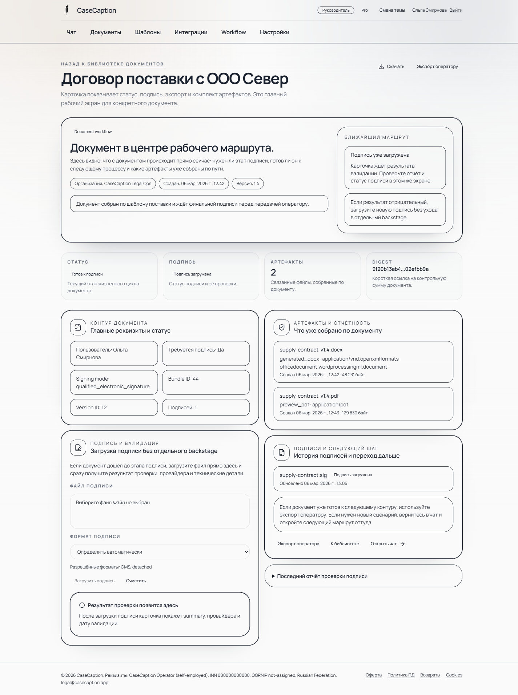
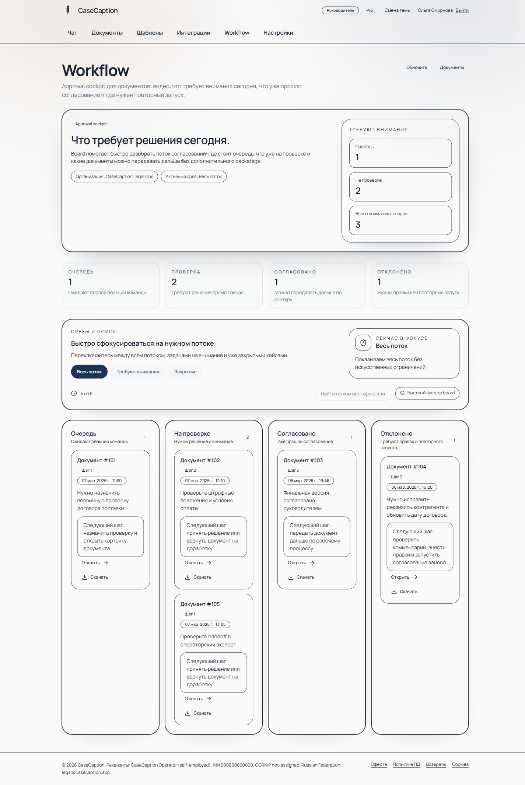

B2B-сервисы и агентства
Счета и акты по клиентским проектам, регулярным услугам и пакетам работ.
CaseCaption помогает компаниям выпускать повторяемые B2B-документы без ручной пересборки в Word и Excel: ИНН, реквизиты, данные по услуге, предпросмотр, скачивание и история действий.

Система ведет оператора по короткому маршруту: сначала собирает недостающие данные, затем выпускает документы и сохраняет контекст.
Основной показ: выбрать шаблон, включить автозаполнение, проверить поля, сгенерировать счет и акт, открыть карточку документа и скачать результат.
Открыть видео отдельноCaseCaption лучше всего проверять там, где документы повторяются, но процесс еще держится на ручных файлах и переписке.
Счета и акты по клиентским проектам, регулярным услугам и пакетам работ.
Первичка для клиентов, где часть данных приходит вразнобой и требует аккуратной сборки.
Документный модуль для клиентских сценариев, которые пока не закрыты учетной системой.
После генерации документ остается в рабочем контуре: карточка, артефакты, статусы, согласование, аудит и ассистент по текущему объекту.

Private beta
Нужны компании, бухгалтеры или сервисные команды, которые регулярно готовят счета и акты и готовы дать честную обратную связь по реальному процессу.
Напишите в Telegram: пришлю демо и задам несколько вопросов по вашим документам.